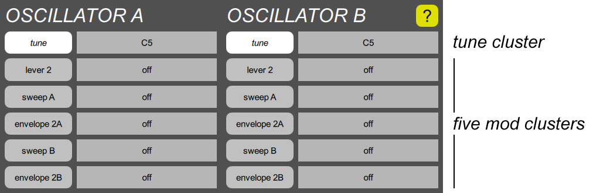

OSCILLATOR section

The oscillators generate audio frequencies, whose pitches are controlled by glide generators, and whose shapes are generated by waveshapers. OSCILLATOR A is always controlled by GLIDE A, and its shape is produced by WAVESHAPER A, and the B side is similarly chained together. Each oscillator has the following parameter clusters:
- One tune cluster. All it has is one basic tune slider.
- Five mod clusters. Each cluster button shows the current mod select parameter, and the slider controls the mod depth. The first modulation cluster also has a steps parameter, for sampling or quantizing.